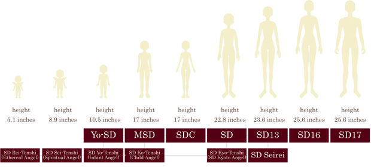
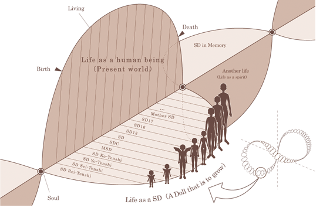

Volks has almost completely dominated the Japanese resin doll market. You will rarely see Japanese owners with another brand of doll, especially before Dolk came on the scene. Volks created the original resin BJD in 1999 and has been chugging along ever since.
Volks is known for its elitist fans in the English speaking community (me). Beware!
There are so many Volks stores in Japan! They can be separated into 4 types.
Volks HQ in Kyoto. Here is a video tour by the creepiest host for your viewing pleasure. Dollfie Dreams are not allowed after 2015. Tenshi models and many FCS models are exclusive to this store.
Volks' Harajuku location. It's still a very pretty shop and has more FCS options than a Sumika.
The rest of the Dollfie stores! There are multiples of these in many cities. They're much smaller than Sato and Mado, but still look fun!
Shortened to "Dolpo". There's one in Akihabara and one in Osaka. They are focused on Dollfie Dreams, but Super Dollfie is offered there as well. Offers an FCS-like service for Dollfie Dreams called Dream Choice.
There's not much for international doll lovers, unfortunately.
The LA Sumika was closed down in 2014, but the online business remains open. My teenage dreams of visiting were crushed. Once in a while, they'll vend at a doll show or anime convention. They cannot sell outside of North America.
Closed down in 2017. Dolls can still be purchased through haruhana. Sometimes haruhana gets more interesting dolls than VolksUSA just sayin.
And of course, the online shop, Volks International!
A quarterly magazine sold by Volks with information about new releases. Even if you can't buy the doll, you can buy the magazine so you can stare lovingly at the doll you lost in the lottery.
Interested in the models for each issue? They can be viewed online starting at issue 89. Just change the number in the URL to the issue you are looking for!
A note on headplates: the period in the date may also be seen as a comma. Extremely early oldskin dolls do not have headplates or a recess for a headplate. Dolls made in or after 2002 have plates or space for a plate. Headplates were renewed between May and September 2019. Pre-renewal plates read "SD" on the top line while renewed headplates say "VS SD". Between 2003/11 and 2004/04, "MADE IN JAPAN" was added to the bottom section of the plate.
Available all the time. Only a few models are offered at a time and the lineup changes every few years. For some reason, there haven't been any boys regularly available in many years. The current set have been discontinued and their replacements have not been announced.
MSD standard models could be purchased as unassembled kits, at a discount over the price of assembled and painted dolls.
In addition to standards, there's limited standards. SD WS Mai and SDGrB Haru are examples of these. I believe haruhana has had these once, but never VolksUSA. They're limited releases for events at Sato for the most part.
Standard models come with "YY.MM/RE" plates and a -STANDARD MODEL- Certificate of Authenticity. The plates on limited standards say "YY.MM/SDF" (Standard Model Fair) or "YY.MM/LI".
Dolls available to be purchased immediately in store. They come fully dressed and are wearing matching outfits. Super Dollfie Midi and Dear SD are the only dolls that show up as coordinate models.
SDM coordinate model headplates say "CN-MODEL" and they come with a -COORDINATE MODEL- Certificate of Authenticity. DearSD are the only models without the owner name filled in by the store. Their headplates say "DEAR-SD" or "DEAR SD".
Dolls released in limited numbers. They're usually sold by lottery or very rarely, pre-order. Some older releases did have publicized numbers, but we will probably never know the current numbers, except of a few dolls like Momoko Ryugasaki, Mana-sama, and HYDE, who all have numbered headplates. Volks likes to release dolls in story lines that are cute!
Their headplates say "YY.MM/[EVENT]" or "YYYY/[EVENT], describing the year and/or month of the event the doll was released at. Limited models do not have CoAs.
The headplate for SD16 Pearl sold by mail order to purchasers of Another Yourself 2009 says "SDPHOTOAYS09". Black Jack has a headplate reading "BLACK JACK".
Disney models have a copper colored plate without any printed information on the release of the doll.
Shortened to FCS (English) and フルチョ (Japanese). A method of buying a Volks doll where you can choose every aspect of your doll. Usually takes around 2 months to get your doll made. Limited doll heads are not offered, but there's 100-ish heads to choose from for an SD sized doll. VolksUSA offered a watered down version of this called OnlineFCS. More like "Some Choice System". It has not been offered in over a year, but is said to not be discontinued.
The headplates on these dolls will either show the FCS order number, which matches their Certificate of Birth, or "YY.MM/F_", which is the year and month it was made and the letter of the store it was ordered at.
This is the only way to get a doll in PS Ever Beauty. These dolls have special headplates which are silver. Each part of the doll is marked "PS EB" as well. They are promised to yellow as slowly as possible, but cost about twice the price of a PS Fair/White doll. EB Tan does exist as an option. Multiple users have found EB to yellow faster than regular resins. Please read up on these issues before making an order.
Dream FCS (夢フルチョ) is like FCS on drugs and costs like $4k. Pick any doll in any resin color with any faceup just do whatever you want! They do not offer this very often or to more than a few people.
To get one of these, you have to visit Tenshi no Sato to enter the lottery for one. If you win, you'll get a call from Tenshi no Sato, and you'll have to come in to pick it up after listening to a 1 hour spiel about them. There are four headmolds available: Kasumi and Yayoi and an almost closed eyed version of both. They are on the SDGr yumetenshi body. It's a genderless body based off the SDGr girl body. All of these are blushed, either point (partial) or full. The faceup and blushing are sealed in a way that cannot be removed or scratched, although owners report the blushing to be just as fragile as on a normal doll. Allegedly, PS Bisque yellows faster than PS Everbeauty.
If you get caught buying or selling one of these secondhand, Volks will ban you. To get rid of one, you must return the doll to Volks.
A doll with a faceup done by a Volks artist that is one of a kind. Each has a headplate that says "ONEOFFMODEL" and a -ONE OFF MODEL- Certificate of Authenticity. The base doll is not OOAK, but the outfit may be. Volks will often commission popular dealers from their Dolpa events for the outfits. These are usually sold by lottery in person at a Volks store or event. Around twice a year, they will also be sold by lottery online at Volks International. VolksUSA and Haruhana have these events about once a year as well.
The winners of one-offs from Volks stores are notified with a white envelope containing a photo and information of the doll.
The current one-off artists are: Ciera, Kinoko, Tsukimi, Rumina, Luluco, aone, Yui, Saifa, HARU. Former one-off artists are: K.Mayura, Valico, momo, MIKEY, Kyon, and KISARAI. It's not uncommon that the artist will leave a signature inside of the head. Gift tenshi also include one off certificates and may have makeup credited to Zoukeimura.
Included in this are Super Dollfie Dream, which are Dollfie Dream heads cast in resin and released on a SD body. Extremely rare as only a few have been released many years ago. I swear I'm not crazy.
The results of the wakare service! A refurbished dollfie. They have special little black outfits, new wigs, and new (FCS recommended) faceups. They're available for immediate pick up at Sato and Mado (when available). The prices are SDM 37,400円, SD/SD13 60,500円, SDGrB 79,200円 for non-limited models. Limited models are higher priced at SDM 42,400円, SD/SD13 66,000円, SDGrB --,---円.
It is HIGHLY recommended you do not buy these without seeing them first in person. I have seen multiple with mismatched resin that most would not find acceptable.
The headplates for these models say "ADAPTION" and come with a -SD ADAPTION MODEL- CoA.
Classroom models are sold at faceup classes hosted by Volks. Originally, these were sold without headplates. More recent heads now come with headplates that say "SCHOOLx", with the letter of the head.
Dollfie World Cup (DWC) models are sold during faceup competitions. These models may also be sold as one-offs. Their headcaps say "SD-DWCF-x", with the number of the head sculpt.
There's a few very special models which are small sculpted angels that are given away at Volks events. These models cannot be purchased from Volks. Reitenshi (霊天使) are the smallest and most minimally jointed. Seitenshi (精天使) are a bit smaller than Yo and fully jointed.
For Yo, MSD/SDM(KoTenshi), SD(KyoTenshi), SD13(SeiRei), SDGr(YumeTenshi), tenshi just means the body has no genitals. Both male and female SD bodies are converted to tenshi bodies and although the girls are completely flat, you can tell which base body was used easily by the overall body shape. These are sold at Tenshi no Sato. Their headplates are "L" followed by a number.
I hope you have too much money if you want one of these. Sold at events only.
Shortened to ドルパ Dolpa. Quarterly in person Volks event where new dolls are released and dealers gather to sell goods. Many happen at Tokyo Big Sight, but this isn't the only location. Hometown Dolpa take place in Kyoto. VolksUSA also hosts a Dolpa in LA once every 2 years or so since 2015.
There have been a few events on cruise ships. You'll find some Oath of Silver Coin dolls were exclusive to these events.
Volks used to hold some events at the Volks Mansion. There's no way Volks owns a mansion in California. I have no idea what this was about. Only used for events and parties in the 2000's.
At Dolpa 30 in 2013, Volks broke the world record of the longest line of dolls. Nakayoshi hand parts were given to participants.
Most Volks dolls feature the "one touch system" for an easy method of hand and foot removal. The S hook in the wrist is pulled out and lodged in a recessed area so you can easily remove the hand from the hook. SD/SD13 have this feature in their wrist ball. SD17 has this feature inside of their forearm.
SD/SD13G can all share hands. SDGrG and SD16G share hands, but SD16G requires an extra wrist ball and uses a string. SD13B share hands with SDGrB. SD17 and SDGou can also share hands with SDGr, but a wrist ball and string must be attached for use. SDGrB hands 8-12 specifically are offered to owners of SD17 boys. It appears that the SD17 body only has one set of hands specifically made for it, other than owner limited sword-holding and gun-holding hands.
SDM has the normal and tabi feet options. SD/SD13 has normal, heel, and tabi feet. SDGrG and SD16G have flat footed leg parts, as well as heel legs with no ankle joint. These parts are for the entire leg, not just the knee and below. SDGrB has normal and tabi feet. Please email me if you know the compatibility of SDGrB feet with SDGou and SD17.
When ordering new from Volks, hand sets for SDM are 3,080円, and all larger sizes are 4,400円. Wrist joints are an extra 1,100円. If included with the hand set (such as SD17B-H-01), the cost of the set is 5,500円. Both SDGrG leg part sets go for 19,800円.
Komame is the first Super Dollfie Mascot. Komame is a plush cat owned by Jun Tachibana and created by her mother. You could optionally order a Komame plush after purchasing a SD13 Jun Tachibana. There have been plenty of Komame releases since including "Komame Cheeky", a plush made by Merrythought. Komame is male.
Komame's calico friend is named Dokineko (ド企ネコ). Dokineko has been around since at least 2014.
Shirokuma Shige-chan represents Shigeta Hideyuki, the Volks CEO, and was released for the 45th Volks anniverary in 2017. For the 50th anniverary, two honeybears were released. One flocked, one unflocked. Each unflocked Shige-chan was signed by Shigeta himself!
For the Volks 50th anniverary, Shirokuma Setsu-chan was released! This bear represents the president's wife, Shigeta Setsu. A plushie of Shirokuma Setsu-chan was given away as gifts.
Volks HG eyes are very beautiful compared to the usual acrylics that come installed in your non-Volks doll. While most companies use some sort of white tack, Volks takes the pleasure of using hot glue to secure eyes in their dolls. This surely holds them much more securely than some white tack during shipping!
Unfortunately, removing the eyes without causing damage to the faceup is a terrifying experience. Good luck. I hate it so much.
Volks ceremony performed in a Volks location where you welcome your new Volks doll into your life. A free service, but reservations are required. All Super Dollfie can be welcomed regardless of when they were purchased.
Volks staff will place your doll in a bed on an altar covered in a veil. Doors are locked, lights are dimmed, and an unfittingly sexy song plays. The store manager wears a cloak and recites some words about how you are welcoming this doll into your life. He or she then lights some candles around your doll.
The candles are blown out and the soulbonding is complete. You are now legally required to pay your doll's taxes. You'll take a commemorative photo that will be sent to you (within Japan). You can then take photos of your doll in the welcoming bed. Invite your friends!
firsthand accounts
My little American brain can't process this one. You can choose to send back your doll to Volks. You pay 2000 yen to Volks. Volks refurbishes the doll and then sells it in their store. You receive a little crystal heart in return. Here's a blog post (and another) from someone crazy enough to use this service.
In 2000, Volks collaborated with Gentaro Araki to create Andolrea U-Noss. Between then and 2004, they could be purchased from Volks through a sort of preorder. A collaboration like this has not happened since and likely will never happen again.
A DoA user brought her Unoss to Tenshi no Sato and found they refuse to do any maintence on the dolls, do not display Unoss in the museum, and do not allow Unoss inside their store. Volks does not consider her a Volks doll.
She is the great and holy spirit behind Super Dollfie! She decides if you win the Volks lottery for the doll you love. She can be seen at Tenshi no Sato. Pray to her nightly before and after entering a lottery.
Volks Pureskin resin was introduced in 2003, replacing the resin formula which we now refer to as "oldskin". In 2005, Volks modified the formula for extra UV protection. These were introduced in limited dolls at first before becoming the only option in FCS in October 2004.
The current resin tones, in order of lightest to darkest:
Standard models only come in PS Fair. Tan is offered for USA and Sato FCS dolls. Amber is offered for SD16 FCS dolls only.
Disney branded Super Dollfie come in two resin tones which are pinker than their counterparts.
Pureskin Ever Beauty (EB) is basically confirmed to be the worst unevenly yellowing resin Volks makes by many surprised owners. Please read up before ordering one. It is available in White, Fair, and Tan.
Pureskin Bisque is only offered for a few yumetenshi models.
Oldskin is the original formula used for Super Dollfie. This was phased out around 2003. Oldskin bodies have glued thigh joints and a different style of knee. Some early pureskin dolls released between May 2003 and July 2004 also have these knees (eg. Shirou Tachibana, Ria, Lady Sylvie).
Beauty White came in both oldskin and pureskin varieties. It has a yellower undertone than regular white and was not widely available.
For many limited releases, VolksUSA will have their own lottery or preorder. Due to licensing issues, don't expect every release to show up on VolksUSA. An odd limitation occured when Canadians could not enter for or order the Frozen dolls, but this isn't common.
The lottery entry period lasts the first 10 days of the month and the winners are sent emails around the 17-24th at 12AM PST. All winners receive the email at once. The losers do not receive anything. Winners may be able to see themselves added to a "User Group" on their profile before emails are sent out. It's theoretically possible for a winner to not pay and a winning email could be sent out later, but don't bet on it.
Always expect your doll to arrive at least a month past the International arrivals. They are shipped by cargo ship from Japan to LA. After this, they are checked and sent out from the warehouse in Gardena, CA via whichever mail service you choose.
Included with your doll will be a sheet of paper that includes a link to the "Owner Limited Items" page for your doll. These are option hand parts, and other "extra" items like a second wig won't be included. You will need to be logged into your account, which is added to the user group that can view the items. If you have a different paypal email from your account email, you may need to email them to be added to the group. These items will be shipped by sea to LA, so expect another long wait. Alternatively, you can order the option hand parts (or any other parts they may offer) from Volks Int, if you are able to find the link. Ask around! It's likely someone will give it to you.
For more information on VolksUSA online FCS, please visit this page!
VolksUSA pricing has generally been $1 USD = 100円, which could be good or bad for you depending on the exchange rate. For orders shipped outside of California, VolksUSA does not charge tax. Local buyers can choose to pick up outside of the warehouse and skip the shipping fee.
VolksUSA does not offer Beauty Salon, Satogaeri, or Trade Exchange services outside of in person LA Dolpa events.
As much as I like to think I know, I don't know even close to as much as these people!
Covers a lot of topics! Events, pages for each doll sculpt with info on one-off models released. A bit of info on FCS, not really any photos though. Good place to waste time looking at the limited doll you want!
English FCS guide. Based off of Angel Den with updated information. Updates seem to be slow. Lots of photos so you can dream about going to Japan and ordering an FCS doll.
The original FCS guide in English. Also has an area for every standard and limited model doll. Stopped being updated in Sep 2012. Photos are not visible if you use https. Thanks for your hard work, Seraphim! If you need an icon for your DoA signature, she's got you covered too.
In 2019, Volks changed the names of their resin and vinyl tones. This article explains the changes (in Japanese). Sunlight is a much better name than Tan but what do I know.
Very obsolete information, but perhaps may interest you if you're looking to buy an oldskin doll. There's a little more info on ningyobingo as well.